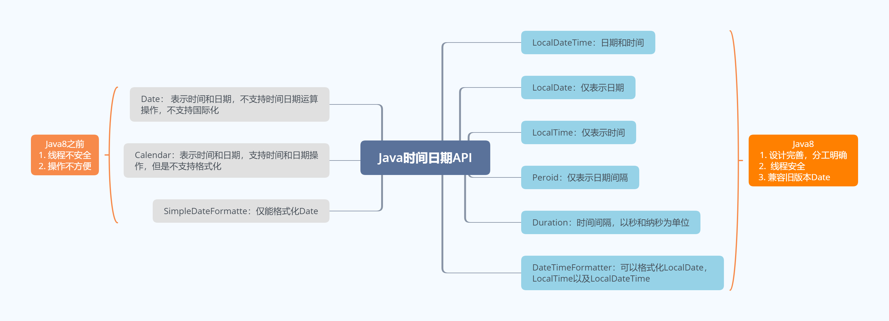
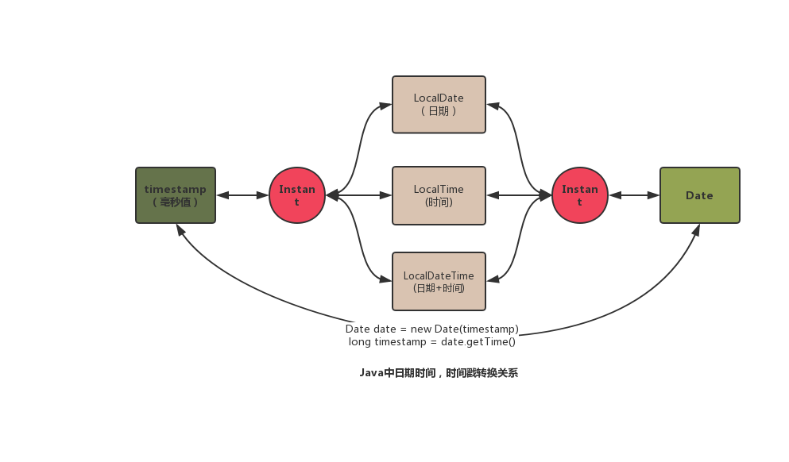
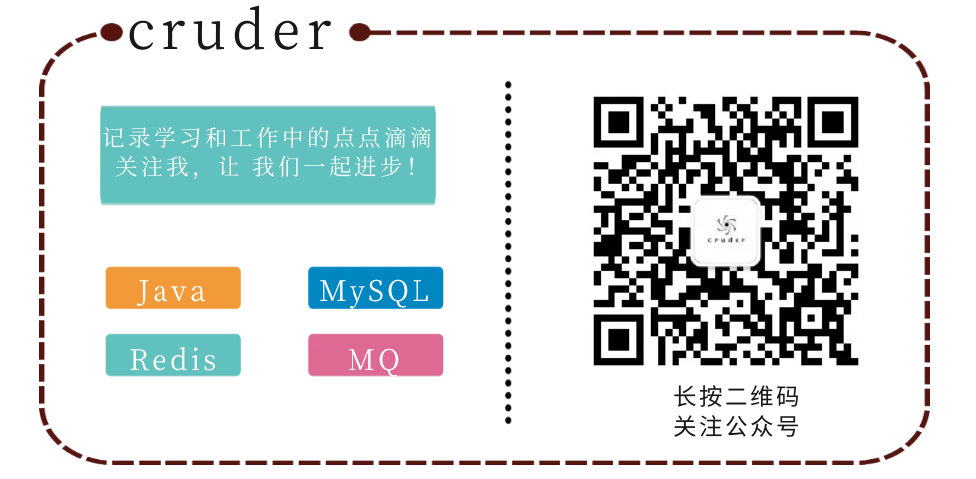

工作这么久了，对于Java中时间日期的操作一直很蛋疼，一会用Date，一会用Calendar一会用LocalDateTime，始终没有认真总结过它们的联系与区别。迷迷糊糊用了好几年了，今天终于搞清楚了！
1.1 为什么要重新定义一套日期时间API
1.2 Java8重新定义

1.3Java8兼容旧版本的Date，同时也规范了日期时间的转换流程。

java8中将时间和日期进行的区分，用LocalDateTime表示日期和时间，LocalDate用来表示日期而LocalTime表示时间。内部实现也非常好理解，LocalDateTime = LocalDate + LocalTime，并且他们的内部api也一致，所以笔者就结合工作中的经验，介绍他们最常见的用法。
1.1 获取当前时间
LocalDateTime localDateTime = LocalDateTime.now();
// 打印结果: 2019-12-02T22:09:20.5031.2 获取指定时间
// 获取 2019年12月02号 23 : 59 : 59
LocalDateTime localDateTime2 = LocalDateTime.of(2019, 12, 2, 23, 59, 59);
// 打印结果： 2019-12-02T23:59:591.3 日期/时间加减操作
// localDateTime2的基础上加1天零1s
LocalDateTime localDateTime3 = localDateTime2.plusDays(1).plusSeconds(1);
// 打印结果：2019-12-04T00:001.4 获取指定的字段(年月日时分秒，纳秒，不支持毫秒)
System.out.println("现在是: " + localDateTime.getYear() + " 年中的第 " + localDateTime.getDayOfYear() +" 天");
// 打印结果：现在是: 2019 年中的第 336 天
// 画外音： 快过年了呀，感觉这一年又没啥收获小知识:地球上不同地区经度不同会划分时区，以零度经线上为准(格林尼治天文台旧址，UTC时区)为准，将地球上各个部分分为了24个时区。向西走，每过一个时区，就要把表拨慢1个小时；同理每向东走一个时区，就要把表拨快1个小时。最后，中国处于东8区。
2.1 获取UTC时间(格林尼治时间)
Instant instant = Instant.now();
// 打印结果： 2019-12-02T14:31:41.661Z2.2 获取北京时间(东8区)
// OffsetTime表示有时差的时间，除了UTC时间，都是OffsetTime
OffsetDateTime offsetDateTime = instant.atOffset(ZoneOffset.ofHours(8));
// 打印结果： 2019-12-02T22:31:41.661+08:002.3 获取毫秒数(1970-01-01T00:00:00Z开始计算)
long epochMilli = instant.toEpochMilli()
// 打印结果：15752971016612.4 定义时间戳
Instant instant1 = Instant.ofEpochSecond(59);
// 打印结果： 1970-01-01T00:00:59Z
instant2 = instant1.plusSeconds(99)
// 打印结果：1970-01-01T00:02:38Z
3.1 计算日期间隔(参数位置影响结果哦)
Instant instant1 = Instant.now();
Instant instant2 = instant1.plusSeconds(99);
Duration duration1 = Duration.between(instant1, instant2);
Duration duration2 = Duration.between(instant2, instant1);
// 打印结果 duration1：PT1M39S
// 打印结果 duration2：PT-1M-39S
long duration1Seconds = duration1.getSeconds();
long duration2Seconds = duration1.getSeconds();
// 打印结果 duration1Seconds： 90
// 打印结果 duration2Seconds： -903.2 操作时间间隔
Duration duration3 = duration1.plusDays(1);
// 打印结果：PT24H1M39S注意 : 仅支持时间操作(Instant， LocalTime，LocalDateTime)，不支持日期(LocalDate)
LocalDate localDate1 = LocalDate.now();
LocalDate localDate2 = localDate1.plusDays(1);
Period period = Period.between(localDate1, localDate2);
long days = period.getDays();
// 打印结果 peroid： P1D
// 打印结果 days： 15.1 获取指定日期或时间
LocalDateTime localDateTime1 = LocalDateTime.now();
LocalDateTime localDateTime2 = localDateTime.withDayOfMonth(20);
// 打印结果 localDateTime1：2019-12-02T22:57:47.674
// 打印结果 localDateTime2：2019-12-20T22:57:47.6745.2 获取下一个固定日期(下一个星期天)
LocalDateTime localDateTime3 = localDateTime.with(TemporalAdjusters.next(DayOfWeek.SUNDAY));
// 打印结果 localDateTime33：2019-12-08T23:00:43.1015.3 自定义矫正器
// 获取下一个工作日
LocalDateTime localDateTime4 = localDateTime.with((tempDateTime) -> {
LocalDateTime localDateTime5 = (LocalDateTime) tempDateTime;
DayOfWeek dayOfWeek = localDateTime5.getDayOfWeek();
if (dayOfWeek.equals(DayOfWeek.FRIDAY)) {
return localDateTime5.plusDays(3);
} else if (dayOfWeek.equals(DayOfWeek.SATURDAY)) {
return localDateTime5.plusDays(2);
} else {
return localDateTime5.plusDays(1);
}
});
// 打印结果 localDateTime4：2019-12-03T23:00:43.101DateTimeFormatter dateTimeFormatter = DateTimeFormatter.ofPattern("yyyy-MM-dd HH:mm:ss");
LocalDateTime localDateTime = LocalDateTime.now();
String dateStr =dateTimeFormatter.format(localDateTime);
// 打印结果: 2019-12-02 23:08:55
LocalDateTime localDateTime2 = LocalDateTime.parse(dateStr, dateTimeFormatter);
// 打印结果: 2019-12-02T23:08:55
LocalDate localDate = LocalDate.parse(dateStr, dateTimeFormatter);
// 打印结果: 2019-12-02java8api对于时间戳，日期时间以及老版本的Date对象之间的转换也进行了兼容和适配，所有的转换操作都可以基于Instant对象进行。由于LocalDate，LocalTime和LocalDateTime三个类的操作完全一样，所以下文仍使用LocalDateTime演示。
7.1 时间戳转LocalDate，LocalDate，LocalDateTime
long timestamp = Instant.now().toEpochMilli();
LocalDateTime localDateTime = Instant.ofEpochMilli(timestamp).atOffset(ZoneOffset.ofHours(8)).toLocalDateTime();
// 打印结果:2019-12-02T23:20:25.7917.2 LocalDate，LocalDate，LocalDateTime转时间戳
LocalDateTime localDateTime = LocalDateTime.now();
long timestamp = localDateTime.toInstant(ZoneOffset.ofHours(8)).toEpochMilli();
// 打印结果：1575300368099 7.3 兼容旧版本Date
LocalDateTime localDateTime3 = LocalDateTime.now();Date date =
Date.from(localDateTime.atZone(ZoneOffset.ofHours(8)).toInstant());LocalDateTime localDateTime4 =
localDateTime3.atZone(ZoneOffset.ofHours(8)).toLocalDateTime();
// 打印结果 date：Mon Dec 02 23:32:53 CST 2019
// 打印结果 lcoalDateTime4：2019-12-02T23:32:53.188上一篇问题：在java中通常使用synchronized来实现方法同步，AQS中通过CAS保证了修改同步状态的一致性问题，那么对比synchronized，cas有什么优势不同与优势呢？你还知道其他无锁并发的策略吗？
8.1 Answer
Java中的无锁并发策略可以分为三种：
8.2 Question
这是一道送分题：正如上文提到的，Java8之前的日期时间以及格式化类是线程不安全的，你知道怎么编写测试代码吗？
如果优雅得获取昨天0点整的毫秒值？
学习Java过程中可能遇到问题和困惑，关注我vx公众号 “cruder” ,后台留言，笔者帮你一起解决！（需要学习资料的请关注后后台留言，主要都是java相关，java基础，并发，mysql，redis，es，mq等都都有！）
